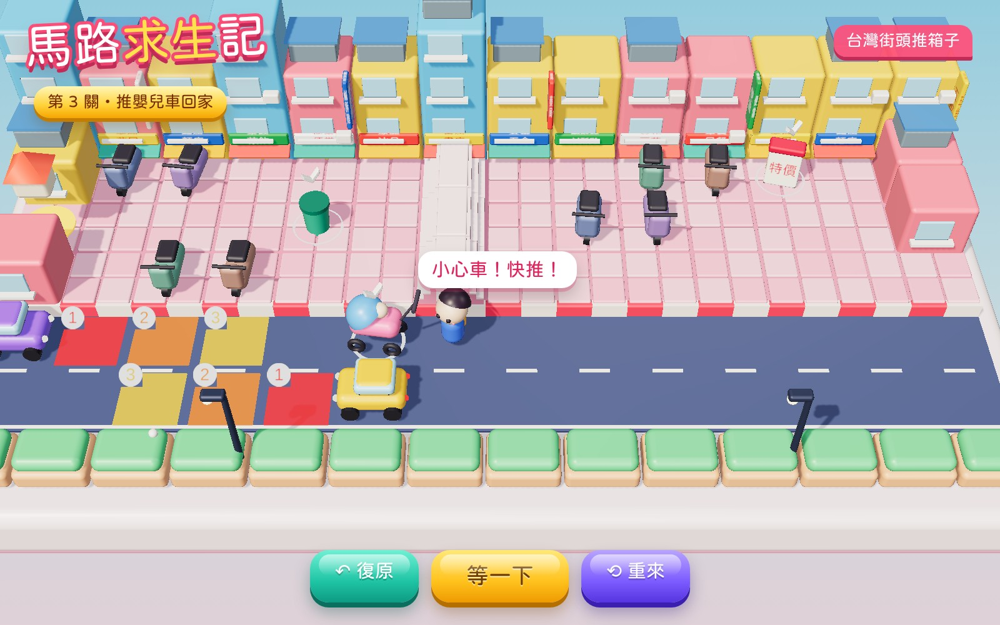
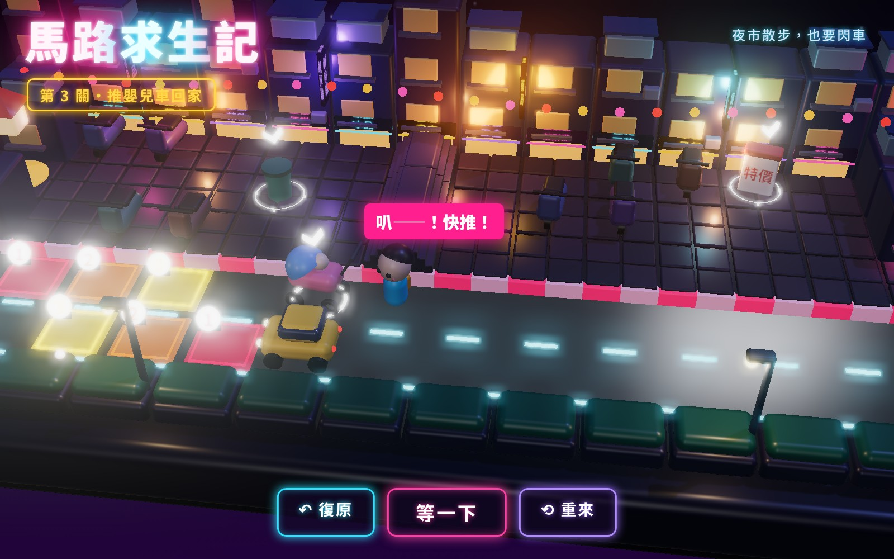
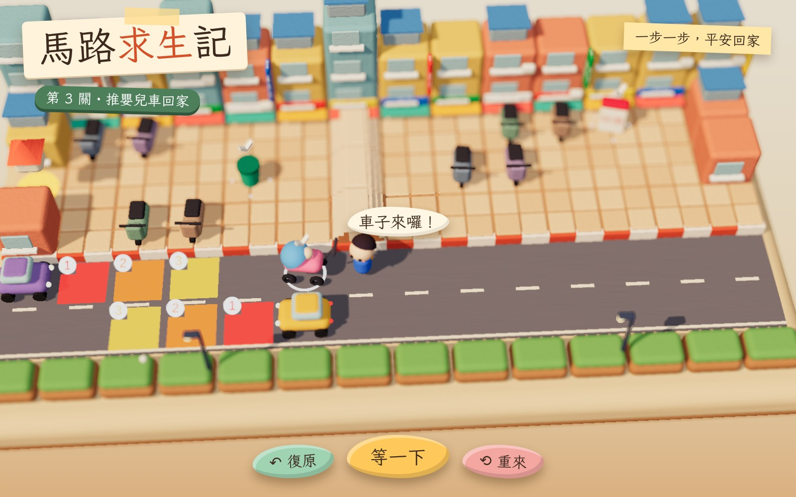
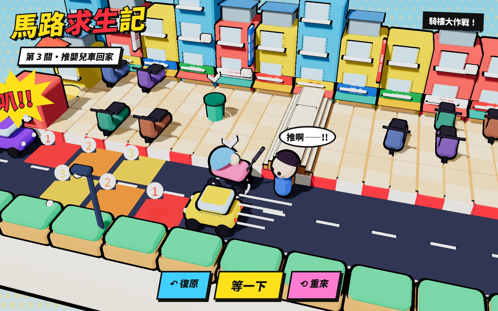
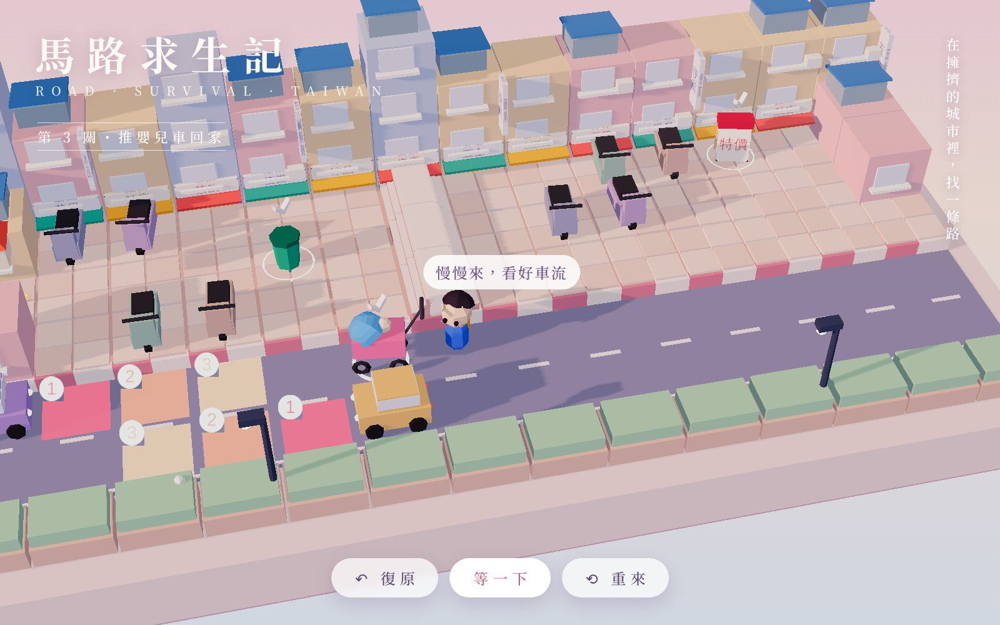

五張都是第 3 關同一個瞬間的完整遊戲畫面：嬰兒車剛被推下馬路，左邊有車開過來，商標和介面都照該方向的設計放進去。比較的重點是氣氛、品牌感，以及「能不能推、哪裡危險」在每種風格裡還看不看得清楚。

把台灣街頭做成一盒亮晶晶的糖果玩具。最廣泛、最安全的手遊商業路線，一眼就是「休閒益智遊戲」。

台灣最有辨識度的夜景：直立霓虹招牌、燈籠串、濕亮的柏油。危險預告本身就是霓虹燈，規則和氣氛合而為一。

最接近你一開始說的「黏土、積木」。霧面黏土加上移軸景深，像在看一座手捏的迷你台灣街角，溫暖又帶點幽默。

卡通描邊加高飽和原色，喇叭聲就畫成「叭！！」的爆炸狀聲詞。把交通亂象演成一齣鬧劇，最有喜感、最好做成迷因。

清晨粉紫色的低多邊形城市，明體直排標語，安靜、有詩意。把「找一條能走的路」包裝成療癒的思考遊戲。
主方向選 03 黏土定格：它最接近你最初的想像，質感最獨特，也最能讓社會議題「好笑但不刺耳」。再把 02 夜市霓虹 做成夜間關卡或付費主題，商店頁第一張圖就用它。
| 方向 | 第一眼吸引力 | 好不好認規則 | 台灣辨識度 | 跟議題搭不搭 | 製作成本 |
|---|---|---|---|---|---|
| 01 糖果街角 | 高 | 高 | 中 | 中 | 低 |
| 02 夜市霓虹 | 最高 | 中 | 最高 | 中 | 高 |
| 03 黏土定格 | 高 | 高 | 高 | 最高 | 中 |
| 04 漫畫爆炸 | 高 | 最高 | 中 | 高 | 中 |
| 05 晨光散步 | 中 | 低 | 中 | 中 | 低 |
五張都是即時 3D 渲染的靜態截圖，場景、角色和道具都是我用程式建模的。角色目前還是簡單幾何造型，選定方向後，角色設計是最需要再投入的地方。